Adicciones químicas
Evaluación, estabilización y tratamiento de problemas relacionados con alcohol, fármacos recetados y otras sustancias psicoactivas, según las necesidades clínicas del paciente.
¿Es una emergencia? +1 (849) 785-3789
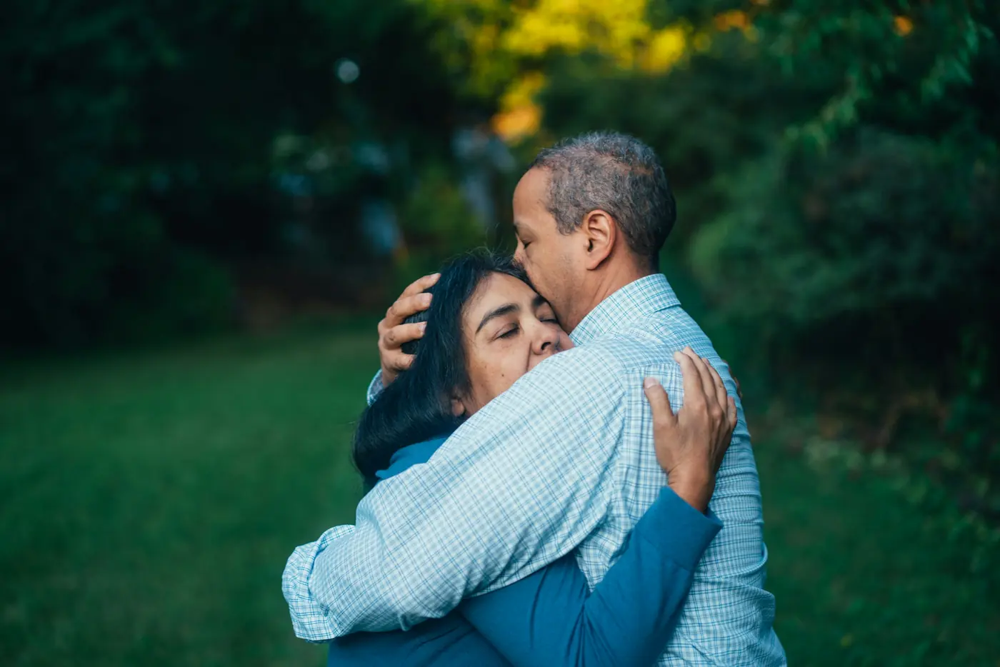
Clínica Conductual VOLVER · República Dominicana
Clínica privada con atención médica, psiquiátrica y terapéutica dentro de un entorno residencial estructurado para estabilizar la crisis, abordar el impacto de la adicción y reconstruir el proyecto de vida.
La confidencialidad es un eje fundamental y un valor institucional de VOLVER. Cuéntenos qué está ocurriendo. Nuestro equipo le orientará sobre evaluación, ingreso y próximos pasos. ¿Prefiere que le llamemos?
«Les puedo decir que mandé un hijo y me devolvieron otro.»
Señales de intervención profesional
La pérdida de control, las recaídas, los conflictos constantes, el deterioro del trabajo o los estudios, el aislamiento y las conductas de riesgo son señales de que el problema ha superado lo que la familia puede manejar por sí sola.
Promesas de parar que no se sostienen; el consumo o la conducta ocupa cada vez más tiempo y espacio.
Periodos de aparente mejoría seguidos de nuevos episodios, cada vez con mayores consecuencias.
Trabajo, estudios y salud se ven afectados; aparecen aislamiento y conductas de riesgo.
Conflictos constantes y una familia que vive pendiente de la próxima crisis, sin saber cómo actuar.
Seguir esperando o intentando sostener la situación únicamente desde el hogar puede prolongar el deterioro. VOLVER ofrece una estructura clínica para evaluar, estabilizar y organizar un proceso de tratamiento.
Quiero orientación para mi familiaUn mensaje del equipo clínico
La “R” de Volver no es solo una letra. Hanoi Vargas explica qué representa y por qué, aun cuando una persona se aleja, el regreso es el centro de nuestro trabajo.
Hanoi VargasPsicólogo clínico · Especialista en adicciones
Hablar con admisionesNo fue posible cargar el video. Inténtelo de nuevo en unos minutos.
Modelo médico-psiquiátrico y patología dual
La adicción es una condición compleja en la que intervienen factores biológicos, psicológicos, conductuales, familiares y sociales. Por eso, un tratamiento serio requiere evaluación clínica y un abordaje multidisciplinario.
Evaluación, estabilización y tratamiento de problemas relacionados con alcohol, fármacos recetados y otras sustancias psicoactivas, según las necesidades clínicas del paciente.
Intervención en ludopatía, apuestas en línea, videojuegos y otros patrones de conducta compulsiva cuando generan pérdida de control y deterioro significativo.
Evaluación y abordaje integrado cuando la adicción coexiste con condiciones de salud mental como depresión, ansiedad, trauma o trastornos del estado de ánimo.
Equipo médico y terapéutico
VOLVER integra médicos, psiquiatras, psicólogos clínicos, terapeutas, personal de enfermería y acompañantes terapéuticos dentro de un mismo proceso de atención.
Psicólogo clínico
Especialista en adicciones
Médico psiquiatra
Especialista en adicciones
Psicóloga clínica
Especialista en adicciones
Encargado de los 12 pasos
Especialista en adicciones
Psicólogo clínico
Especialista en adicciones
Psicóloga clínica
Especialista en adicciones
Psicóloga clínica
Especialista en adicciones
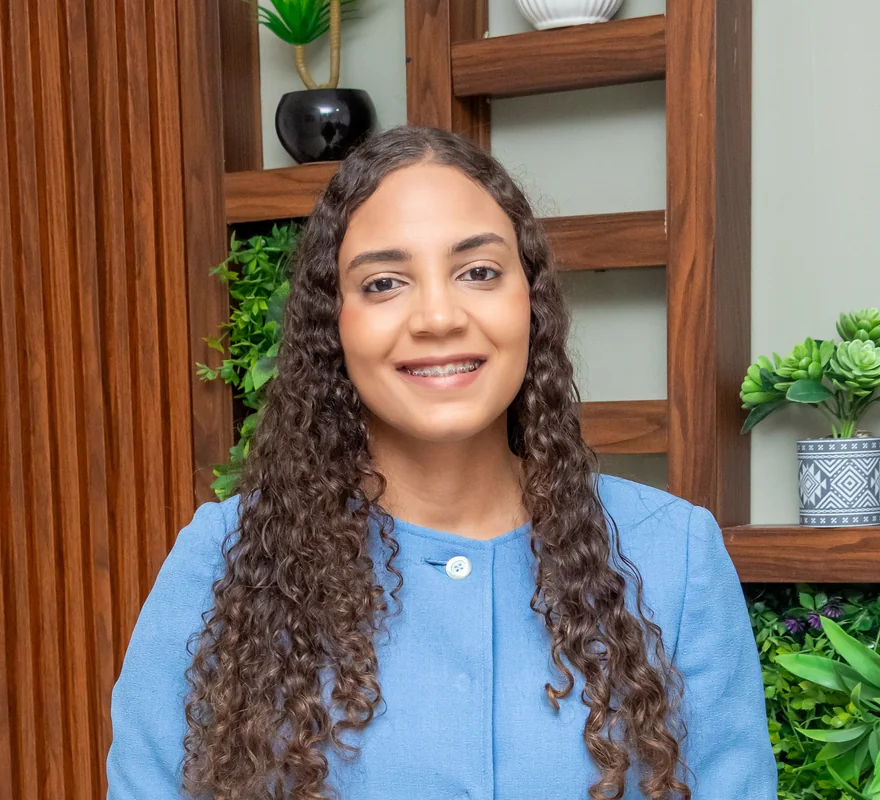
Psicóloga clínica
Especialista en adicciones
Psicólogo clínico
Especialista en adicciones
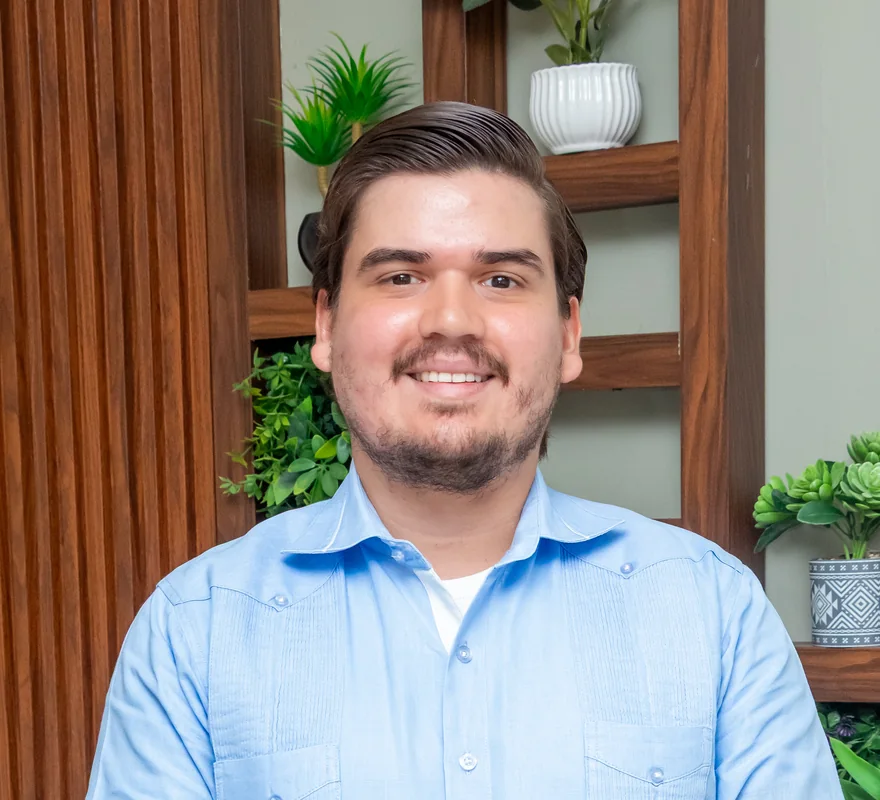
Psicólogo clínico
Especialista en adicciones
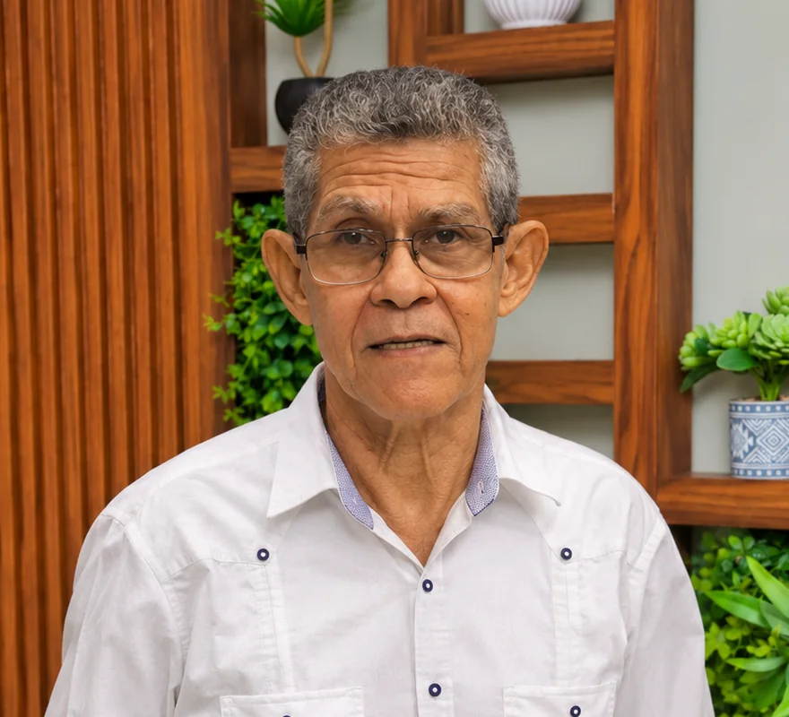
Psicólogo clínico
Especialista en adicciones
¿Necesita hablar con alguien del equipo hoy?
Llamar a admisionesMetodología terapéutica
Tres componentes complementarios que trabajan al mismo tiempo dentro de un mismo plan de tratamiento.
Componente clínico
Componente comunitario
Componente familiar
¿Cómo participaría su familia? El equipo de admisiones se lo explica en una llamada confidencial.
Llamar a admisionesRuta clínica VOLVER
Clínica habilitada por el Ministerio de Salud Pública · Licencia de habilitación, código 00101A05833
VOLVER articula su atención en República Dominicana a través de dos centros complementarios que cubren desde la atención de emergencias y desintoxicación hasta la rehabilitación residencial de larga estadía.
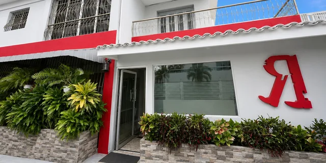
Centro 1 · Emergencias y desintoxicación
Tratamiento de corta estadía
Centro 2 · Internamiento y rehabilitación
Tratamiento de larga estadía
El objetivo es que cada paciente reciba la atención que corresponda a sus necesidades clínicas y a la etapa de su proceso.
Instalaciones y entorno terapéutico
El tratamiento residencial necesita estructura, privacidad, espacios clínicos y condiciones que permitan al paciente concentrarse en su proceso. VOLVER integra áreas residenciales, terapéuticas, recreativas y de convivencia.
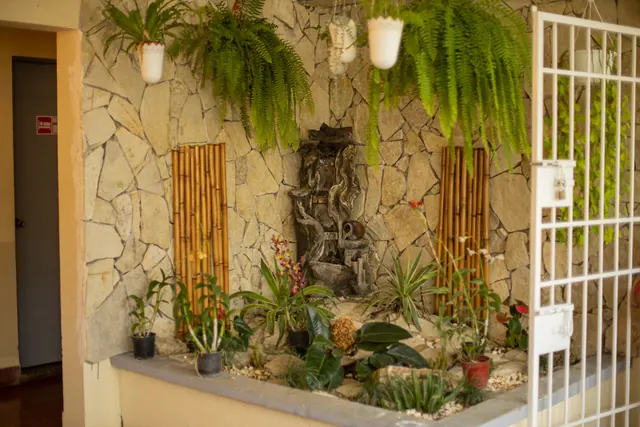
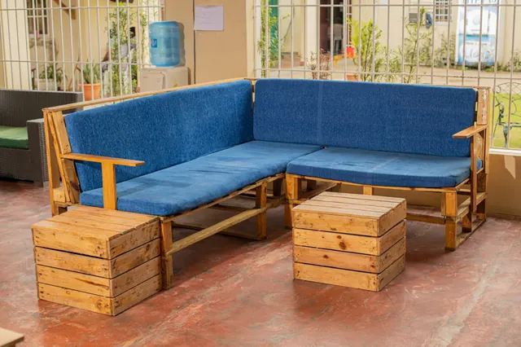
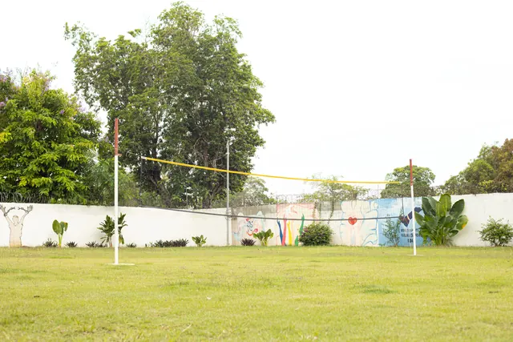
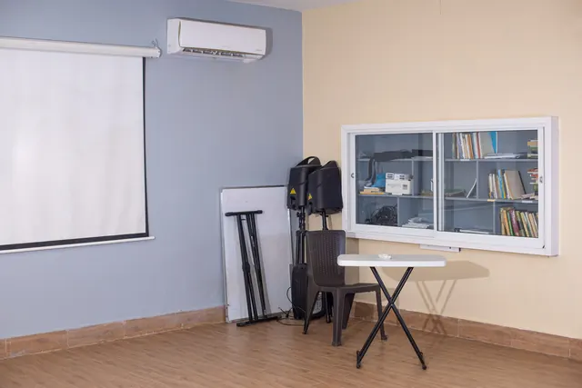
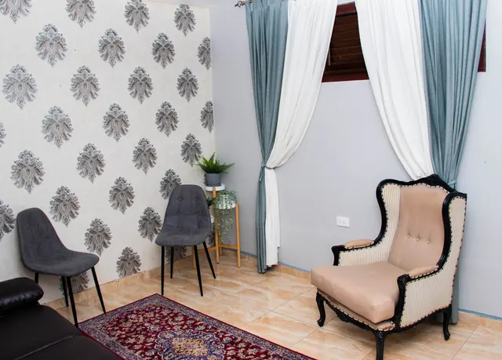
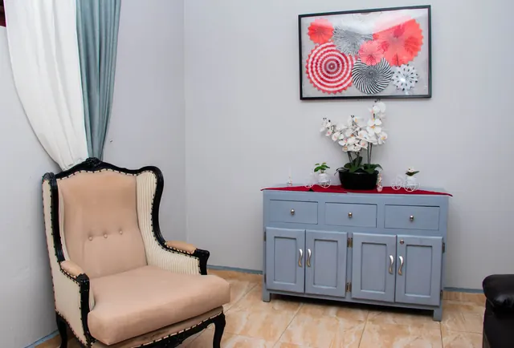
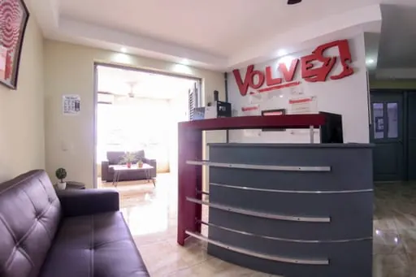
La voz de las familias
Reseñas reales publicadas en el perfil de Google de VOLVER. Por respeto a su privacidad, mostramos solo nombre e inicial.
Ver esta reseña en Google«Lo mejor que me pudo pasar en la vida es que, en medio de tanta tormenta y tanto dolor, me recomendaran esta clínica conductual, que es Volver. (…) Les puedo decir que mandé un hijo y me devolvieron otro.»
Ver esta reseña en GoogleExcelente centro de rehabilitación, con un personal sumamente capacitado (…). Muy satisfecha y agradecida por el excelente trabajo que hicieron con mi hijo. Hoy día él es un hombre completamente renovado. (…) Bendiciones para todos.
Ver esta reseña en Google¡Excelente centro! Ya que en él no solo encontrarás un lugar para rehabilitar y mejorar las conductas de un ser querido, sino también un apoyo general para la familia y su codependencia. (…)
Ver esta reseña en GoogleLe doy gracias a Dios y a todo el equipo de trabajo de Volver por su gran colaboración y su gran trabajo que realizaron con mi hija. Gracias mil y lo recomiendo al 100%, y que Dios los siga iluminando para seguir devolviendo paz y tranquilidad a muchos hogares.
Una conversación confidencial con admisiones es el primer paso. Le ayudamos a entender qué nivel de atención podría necesitar su familiar.
El primer paso
Sabemos que hacer esta llamada no es fácil. No necesita tener todo claro ni saber qué decir: nuestro equipo le guiará desde el primer minuto.
Por teléfono o WhatsApp, con sus propias palabras. Puede llamar usted como familiar, pareja o amigo, aunque la persona todavía no haya aceptado ayuda.
El equipo de admisiones revisa la situación con usted y le explica las opciones: evaluación, nivel de atención posible y cómo abordar a su familiar.
Si corresponde, se agenda la evaluación en Bella Vista. Después de ella, la familia recibe un presupuesto detallado antes de formalizar cualquier ingreso.
Protocolo de admisión
La resistencia, la minimización del problema y la negación pueden dificultar que una persona acepte ayuda. La familia no tiene que manejar sola esa conversación ni esperar a que la situación continúe deteriorándose.
Vía 1
El equipo orienta a la familia sobre cómo abordar la situación y facilitar que la persona acceda a una evaluación y, cuando corresponda, al ingreso voluntario.
Vía 2
Cuando existe una situación de riesgo cierto o inminente para la propia persona o para terceros, o una alteración mental grave con afectación del juicio, el equipo orienta sobre la evaluación y los procedimientos que correspondan conforme a la Ley No. 12-06 y demás requisitos aplicables.
Transparencia económica
El tratamiento en VOLVER implica un costo. No existe un presupuesto único aplicable a todos los pacientes, porque cada persona llega con condiciones y necesidades clínicas particulares.
Clínica privadaEvaluación individualPresupuesto detallado después de la evaluación
Consultar costos con admisionesDespués de la evaluación, el equipo define el alcance del tratamiento requerido. La duración estimada, las necesidades médicas o psiquiátricas identificadas y otros requerimientos particulares del caso pueden incidir en el costo.
Una vez realizada la evaluación, el equipo de admisiones entrega a los familiares o responsables un presupuesto detallado que especifica el alcance del tratamiento, los servicios contemplados, el costo correspondiente y las condiciones de pago, antes de formalizar el ingreso.
Preguntas frecuentes
¿Su pregunta no está aquí? Escríbanos por WhatsApp.
Cada caso es distinto. Una conversación resuelve más dudas que cualquier lectura.Confidencial y sin compromiso.
Llamar a admisionesLa duración depende de cada caso. Se define después de la evaluación clínica, según las necesidades médicas, psicológicas y psiquiátricas del paciente y la etapa de su proceso. El equipo de admisiones le orientará sobre la duración estimada.
Las condiciones de cobertura y pago se revisan con cada familia. El equipo de admisiones le indicará las opciones disponibles para su caso junto con el presupuesto detallado.
El modelo contempla adicciones conductuales y la evaluación de condiciones de salud mental que pueden coexistir con la adicción, de acuerdo con las necesidades clínicas de cada paciente.
La familia recibe orientación y psicoeducación y puede participar en intervenciones familiares definidas dentro del plan de tratamiento. El objetivo es mejorar comprensión, comunicación, límites y preparación para la continuidad del proceso.
La comunicación con la familia y las visitas se organizan dentro del plan de tratamiento, de acuerdo con la etapa del proceso y las indicaciones del equipo clínico. El equipo de admisiones le explicará cómo funciona en su caso.
«Y volviendo en sí, dijo: (…) me levantaré e iré a mi padre.»
Lucas 15:17–18
El significado de VOLVER
El concepto de Clínica Conductual VOLVER nace de una imagen profundamente humana: una persona puede atravesar decisiones equivocadas, pérdidas, crisis y procesos difíciles sin que esas experiencias tengan que definir para siempre su historia. La “R” invertida y marcada del emblema representa esas huellas.
Admisiones confidenciales
Hable directamente con el equipo de admisiones de VOLVER. Le orientaremos sobre evaluación, ruta de atención, proceso de ingreso y próximos pasos con la discreción que este momento requiere.
Le contactaremos por el canal que prefiera. No necesita compartir información clínica.
Gracias. El equipo de admisiones le contactará a la brevedad por el canal indicado. Si la situación es urgente, llame ahora al +1 (809) 534-6002.